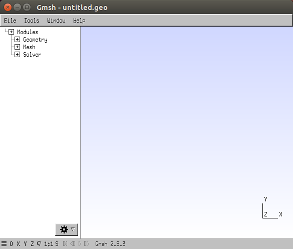
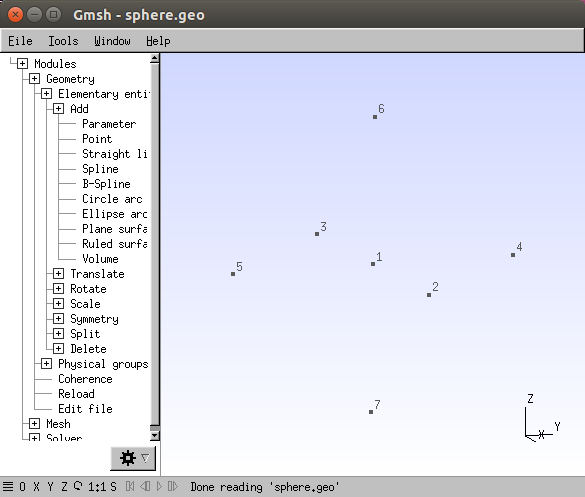
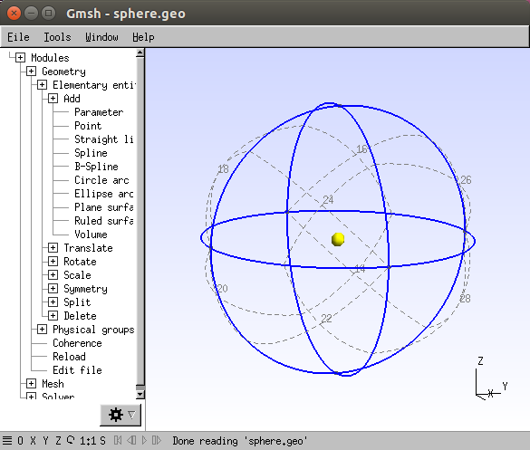
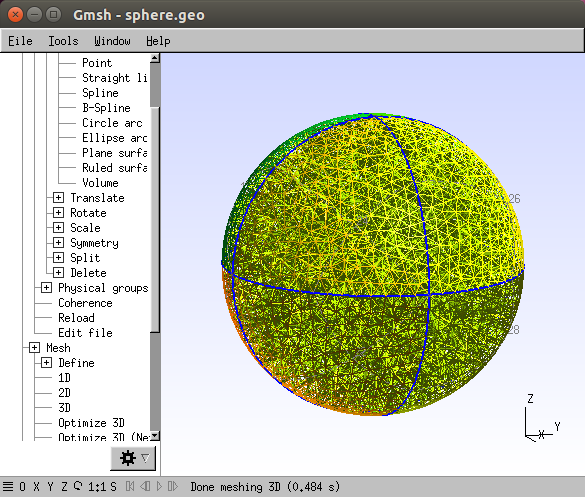
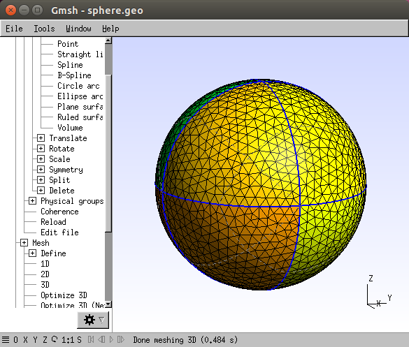
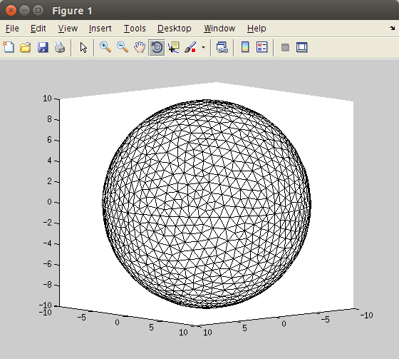

| Image Reconstruction in Diffuse Optical Tomography |
Toast toolbox tutorial: Building a spherical mesh with GmshToast++ doesn't include its own mesh generator except for trivial meshes like circles, spheres and slabs without internal boundaries. Toast can however import meshes built with Gmsh, an open-source mesh generator. To run the following examples, you need to have Gmsh installed on your system. You can download Gmsh from its home page. On many Linux systems (such as Ubuntu), you should be able to install gmsh with
sudo apt-get install gmsh
Launch Gmsh in interactive mode by typing
gmsh
(On Windows systems, you will probably have an icon or Start menu item that allows you to launch Gmsh). You should see the Gmsh application window, containing the menu window (left) and the graphic window (right)  The Gmsh main window. We will now use Gmsh to construct a mesh for a simple spherical domain. Note: If you want to skip the manual definition of the sphere geometry described in Step 1 of this tutorial, a ready-made geometry file can be found in $TOASTDIR/examples/matlab/gmsh/sphere.geo. You can load it into gmsh with File | Open | sphere.geo after navigating to the correct subdirectory in the file-open dialog. Then continue with Step 2. Step 1: Define the geometryThe Geometry module allows to define the domain to be meshed. We need to add some geometry elements to the current (empty) project. These contain points, circle arcs, surface patches, and finally the sphere volume. Adding parametersFirst, let's add a few parameters to be used for these geometry definitions.
Adding pointsNext, we need to define the points we will use to construct the circle arcs for the sphere.
 The points we will use to attach the circle arcs. Adding circle arcsWe can now attach circle arcs to the points to define the sphere patches.
Sphere geometry after defining the surface patches. The circle arcs defining the sphere. Adding surface patchesWe are now ready to add the patches that define the sphere surface. Each surface patch is bounded by three circle arcs. You define a surface patch by clicking the bounding arcs.
Sphere geometry after defining the surface patches. Adding the volume definitionThe volume is determined by the bounding surface defined in the previous step.
 Sphere geometry after defining the volume. Writing the geometry to fileYou can now save the sphere geometry to a file for later use and manual editing.
Step 2: Meshing the sphereCreating the volume meshGiven the logical geometry of the domain defined in the previous step, we can now mesh the volume.
 The meshed sphere volume. You can change the displayed elements:
 Displaying the surface mesh. You can also define clipping planes to display the internal structure of the mesh:
The clipped mesh surface. Writing the mesh to fileNow save the mesh to a file in Gmsh ASCII format.
Step 3: Loading the mesh into Toast++The Matlab interface of Toast++ has an option to read meshes in gmsh format. Currently this is limited to linear triangles in 2D and linear tetrahedra in 3D, but additional element types will be added in the future.
 The imported sphere mesh. Next: Mesh generation tutorial 2: Add internal structure |